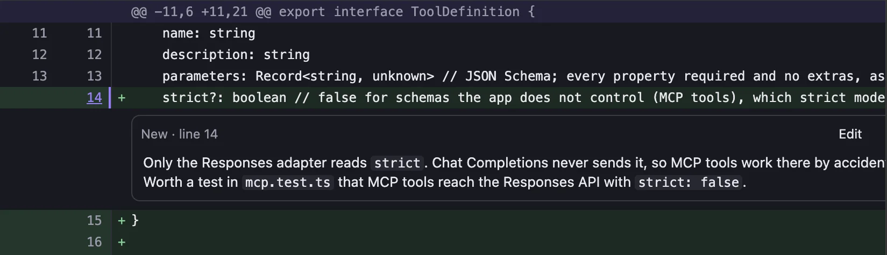
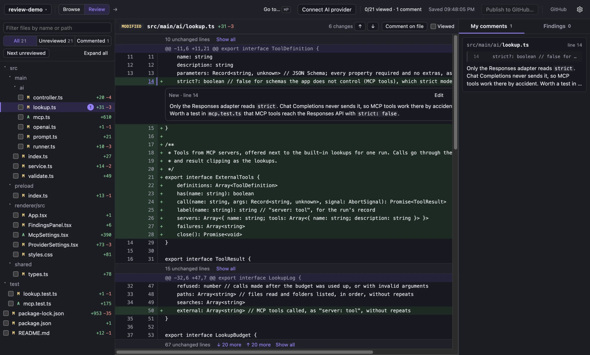
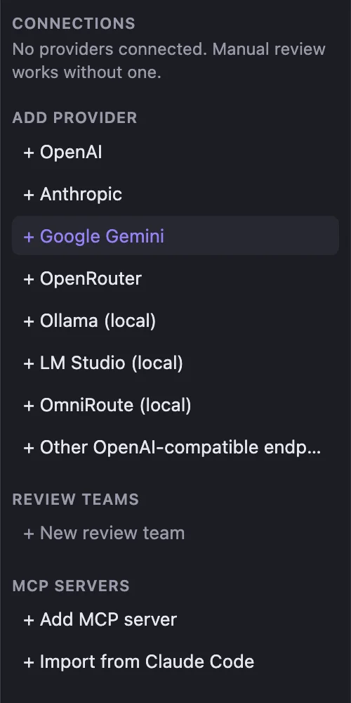
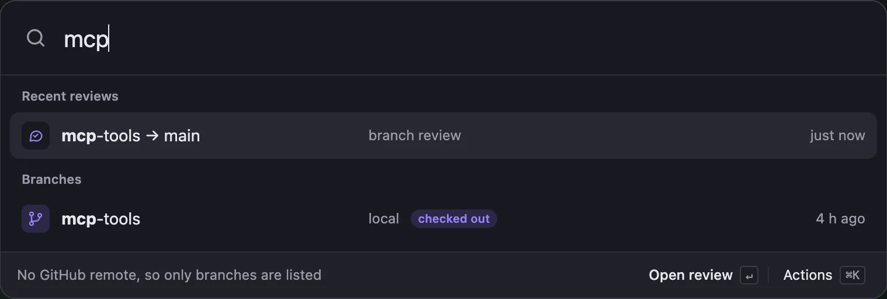
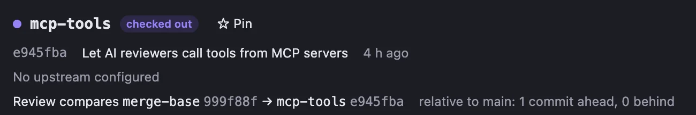
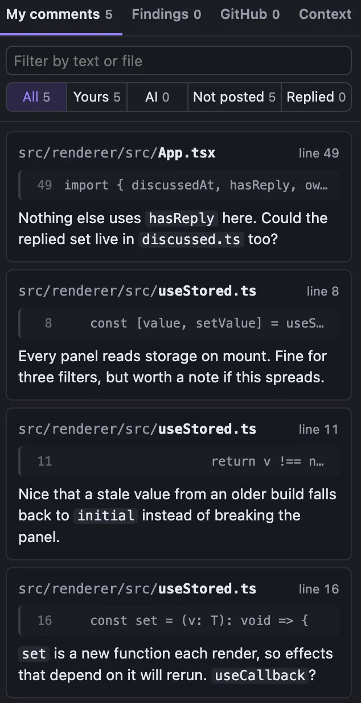
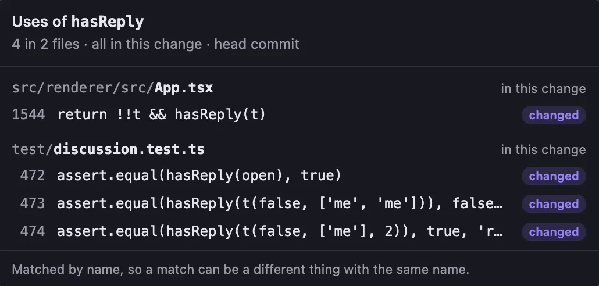

Comment on any line
Click a line number, write, done. Comments save as you type and stay on your computer.

A desktop app for Git branches and GitHub pull requests. Comment on any line, publish when you're ready, and add an AI reviewer with your own model, or none.


Works with
A review, start to finish
The diff comes from your own Git, compared from the merge base.
Comments save as you type and stay on your computer.
Your own model reads the change and raises findings, and can double-check them before you see them.
Comments go to your pending review on GitHub. Nothing is submitted until you say so.
Click a line number, write, done. Comments save as you type and stay on your computer.

OpenAI, Anthropic, Gemini, OpenRouter, or a local model in Ollama or LM Studio. Reviewers can pull extra context from your MCP servers. Or skip AI entirely.

Pull requests waiting on you, recent reviews and branches, all a few keystrokes away.

Reviews compare from the merge base, so the diff doesn't move when someone pushes.

Narrow comments to yours, the AI's, not posted yet or replied to on GitHub, and threads to open or resolved. Your filters stay put next time.

Jump from any name in the diff to where it's defined, or Shift-click to list its uses. Files outside the change open at the reviewed commit.

New comments wait in your pending review on GitHub until you publish, with progress as they go. You choose when to submit.
Reply to a GitHub thread or resolve it right from the diff. Replies go out when you send them, like on GitHub.
Diffs come straight from your local Git, so switching files and commits never waits on a page to load.
Get ReviewFree. Needs Git installed. Review lets you know when a new version is out and installs it for you.
On macOS, Homebrew works too.
brew install hamedghaderi/tap/reviewThe installers aren't signed with an Apple or Microsoft certificate yet, so your system asks once:
chmod +x Review-*.AppImage, then open the file.If Review saves you time, a one-time or monthly sponsorship keeps it going.
Prefer to build it yourself? Node 22.12+ and Git.
git clone https://github.com/hamedghaderi/review.git
cd review && npm install && npm run dev